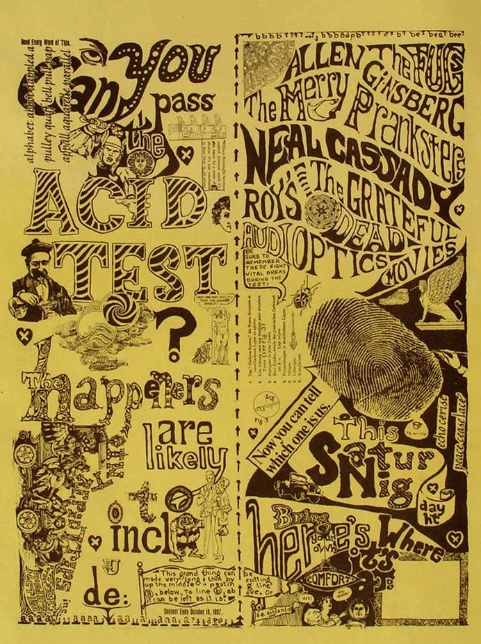
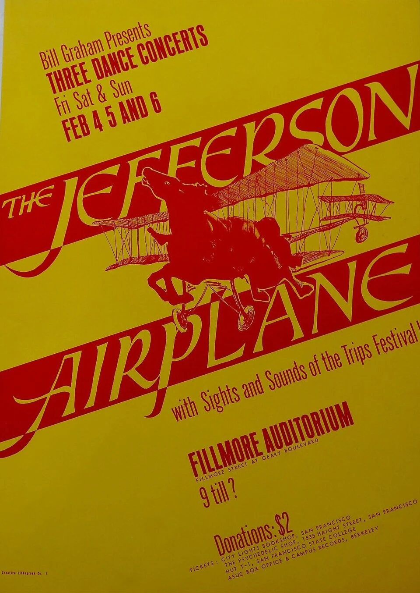
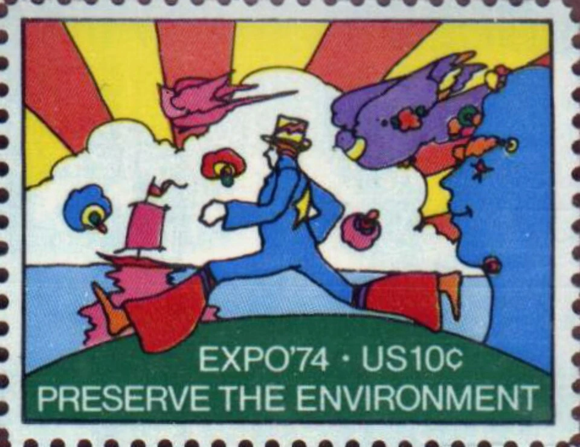
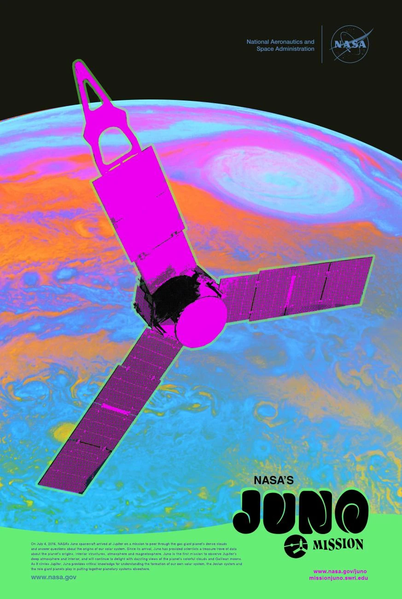

見どころ
文字の大きさも傾きもばらばらで、出演者の名前の間に漫画や手描きの絵が割り込む。1960年代のサンフランシスコ湾岸で、催しの熱気そのものを紙に移した初期のチラシ。
作品・制作の例7件を紹介しています。実作品画像4点、参照・関連画像0点。画像の収集は継続中です。
視覚表現の潮流（ここでは音楽ポスターを中心に扱う）
Psychedelic Art
うねる文字、ぶつかり合う色、すき間を埋める模様。サイケデリック・アートは、いつもと違う感覚を思わせる表現です。1960年代には、ロックの演奏会のポスターにも広がりました。
実作品を見る

画像を表示できませんでした。下の出典ページで確認できます。
ノーマン・ハートウェグ、ポール・フォスター / 1965年
文字の大きさも傾きもばらばらで、出演者の名前の間に漫画や手描きの絵が割り込む。1960年代のサンフランシスコ湾岸で、催しの熱気そのものを紙に移した初期のチラシ。
ノーマン・ハートウェグ、ポール・フォスター／Wikimedia Commons掲載の複製
出典で作品・資料を見る ↗実作品を見る

画像を表示できませんでした。下の出典ページで確認できます。
ピーター・ベイリー（デザイン）／ビル・グレアム（主催） / 1966年
バンド名を二本の斜線に沿って大きく組み、余白には複葉機を飛ばした。後に文字を複雑に変形するポスターで知られるようになる、ビル・グレアムの公演ポスター・シリーズ第1号。
ピーター・ベイリー／Wikimedia Commons掲載の複製
出典で作品・資料を見る ↗実作品を見る

画像を表示できませんでした。下の出典ページで確認できます。
ピーター・マックス（デザイン）／米国郵政公社（発行） / 1974年
赤と黄色の光を背に、裾の広い服を着た人物が緑の丘を大股で走る。ポスターで人気を得たマックスの鮮やかな色と曲線が、環境をテーマにした万博の10セント切手に収まった。
ピーター・マックス／United States Postal Service／Wikimedia Commons
出典で作品・資料を見る ↗Public Domain Mark 1.0（米国の1974年発行切手）
出典先の原画像を開く ↗作品の所蔵・権利情報 ↗画像の利用条件 ↗図版全体を保ち、表示用のWebP画像を作成。
実作品を見る

画像を表示できませんでした。下の出典ページで確認できます。
NASA／ジェット推進研究所・カリフォルニア工科大学 / 2021年
木星の雲をピンクと水色に、探査機を紫に染め、丸くふくらんだ文字で「JUNO」と記した。NASAがサイケデリック・スタイルと明記して公開した、1960年代以降の応用例。
Courtesy NASA/JPL-Caltech
出典で作品・資料を見る ↗音楽ポスター
美術館が赤と緑の境界や手描き文字を具体的に解説する例。
作品・資料の出典を見る ↗作品名（出典表記）：The Associationの演奏会ポスター
Wes Wilson（ウェス・ウィルソン） / 1966 / 音楽ポスター
音楽ポスター
ヴィクトリア＆アルバート博物館のポスター史が挙げる米国の例。英国のシルクスクリーン印刷と比較できる。
作品・資料の出典を見る ↗作品名（出典表記）：Otis Rush
Wes Wilson（ウェス・ウィルソン） / 1967 / 音楽ポスター
音楽ポスター
ハプシャッシュ・アンド・ザ・カラード・コートによる英国の例。米国だけで説明しないために取り上げる。
作品・資料の出典を見る ↗作品名（出典表記）：CIA v UFO
Michael English（マイケル・イングリッシュ）、Nigel Waymouth（ナイジェル・ウェイマス） / 1967 / 音楽ポスター
イベントの告知チラシ
文字の大きさも傾きもばらばらで、出演者の名前の間に漫画や手描きの絵が割り込む。1960年代のサンフランシスコ湾岸で、催しの熱気そのものを紙に移した初期のチラシ。
作品・資料の出典を見る ↗原題：Can You Pass the Acid Test?
ノーマン・ハートウェグ、ポール・フォスター / 1965年 / イベントの告知チラシ
公演ポスター
バンド名を二本の斜線に沿って大きく組み、余白には複葉機を飛ばした。後に文字を複雑に変形するポスターで知られるようになる、ビル・グレアムの公演ポスター・シリーズ第1号。
作品・資料の出典を見る ↗原題：Jefferson Airplane, Fillmore Auditorium, February 4–6
ピーター・ベイリー（デザイン）／ビル・グレアム（主催） / 1966年 / 公演ポスター
10セント記念切手
赤と黄色の光を背に、裾の広い服を着た人物が緑の丘を大股で走る。ポスターで人気を得たマックスの鮮やかな色と曲線が、環境をテーマにした万博の10セント切手に収まった。
作品・資料の出典を見る ↗原題：Expo ’74 — Preserve the Environment
ピーター・マックス（デザイン）／米国郵政公社（発行） / 1974年 / 10セント記念切手
宇宙探査の広報ポスター
木星の雲をピンクと水色に、探査機を紫に染め、丸くふくらんだ文字で「JUNO」と記した。NASAがサイケデリック・スタイルと明記して公開した、1960年代以降の応用例。
作品・資料の出典を見る ↗原題：Celebrating 5 Years at Jupiter, Poster Version 2
NASA／ジェット推進研究所・カリフォルニア工科大学 / 2021年 / 宇宙探査の広報ポスター
サンフランシスコやロンドンでは、音楽と若者の文化を伝える印刷物がつくられました。アール・ヌーヴォーの曲線も、新しい色や文字と組み合わせて使われました。すぐ読めることより、音楽の場へ引き込むような体験を大切にした例があります。
明るさが近い赤と緑などを隣に置くと、境目がちらつくように感じることがあります。色相（しきそう。赤や緑など色の種類）と明るさを分けて考えます。
文字が大きくふくらんだり曲がったりして、絵の一部になります。読みにくさが、立ち止まって見るきっかけになることもあります。
植物のような曲線や繰り返しを見ます。曲線だけで判定せず、文字や色との組み合わせを比べます。
余白を広く残すポスターと、画面をいっぱいに使うポスターを比べると、見るときの目の動きが変わります。
アール・ヌーヴォーから形のヒントを得た例がありますが、制作された時代も音楽との関係も違います。ポーランドのポスターにも近い形がありますが、同じ集団ではありません。
同じ文字を赤と緑、黒と白で並べて見比べましょう。目立つことと読みやすいことは、いつも同じではありません。
ここに挙げた作品は、考え方やつくり方の違いを比べるための例です。この分野の全地域・全時代を網羅するものではありません。
作品・制作の例7件を紹介しています。実作品画像4点、参照・関連画像0点。画像の収集は継続中です。